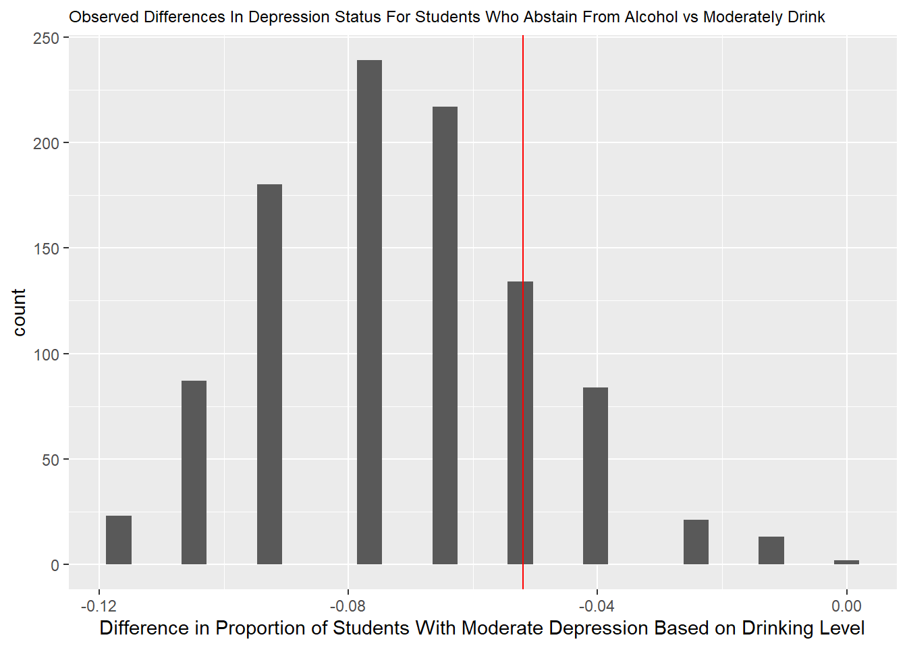

library(tidyverse)
library(readr)
library(dbplyr)Mini Project 2: Simulation
SleepStudy <- read_csv("SleepStudy.csv")Rows: 253 Columns: 27
── Column specification ────────────────────────────────────────────────────────
Delimiter: ","
chr (5): LarkOwl, DepressionStatus, AnxietyStatus, Stress, AlcoholUse
dbl (22): Gender, ClassYear, NumEarlyClass, EarlyClass, GPA, ClassesMissed, ...
ℹ Use `spec()` to retrieve the full column specification for this data.
ℹ Specify the column types or set `show_col_types = FALSE` to quiet this message.Simulating behavior under a null hypothesis: Are Students That Abstain From Drinking More Likely to Have Moderate Depression Than Moderate Drinkers?
SleepStudy2 <- SleepStudy |>
select(AlcoholUse, DepressionStatus) |>
filter(AlcoholUse %in% c("Abstain", "Moderate"))
SleepStudy2# A tibble: 154 × 2
AlcoholUse DepressionStatus
<chr> <chr>
1 Moderate normal
2 Moderate normal
3 Moderate normal
4 Abstain moderate
5 Moderate normal
6 Moderate normal
7 Moderate normal
8 Moderate normal
9 Moderate moderate
10 Abstain normal
# ℹ 144 more rowsSleepStudy2 |>
count()# A tibble: 1 × 1
n
<int>
1 154SleepStudy2# A tibble: 154 × 2
AlcoholUse DepressionStatus
<chr> <chr>
1 Moderate normal
2 Moderate normal
3 Moderate normal
4 Abstain moderate
5 Moderate normal
6 Moderate normal
7 Moderate normal
8 Moderate normal
9 Moderate moderate
10 Abstain normal
# ℹ 144 more rowsprint(SleepStudy2, n = Inf)# A tibble: 154 × 2
AlcoholUse DepressionStatus
<chr> <chr>
1 Moderate normal
2 Moderate normal
3 Moderate normal
4 Abstain moderate
5 Moderate normal
6 Moderate normal
7 Moderate normal
8 Moderate normal
9 Moderate moderate
10 Abstain normal
11 Moderate moderate
12 Moderate normal
13 Moderate normal
14 Moderate normal
15 Abstain normal
16 Abstain severe
17 Moderate moderate
18 Moderate moderate
19 Moderate normal
20 Moderate moderate
21 Moderate normal
22 Abstain moderate
23 Abstain normal
24 Moderate normal
25 Moderate moderate
26 Moderate normal
27 Moderate normal
28 Moderate normal
29 Moderate normal
30 Moderate normal
31 Moderate normal
32 Moderate normal
33 Abstain normal
34 Moderate severe
35 Moderate normal
36 Moderate normal
37 Moderate severe
38 Abstain normal
39 Abstain normal
40 Moderate normal
41 Moderate normal
42 Abstain normal
43 Moderate normal
44 Moderate moderate
45 Moderate normal
46 Moderate moderate
47 Moderate normal
48 Abstain normal
49 Abstain normal
50 Abstain normal
51 Moderate normal
52 Moderate normal
53 Abstain normal
54 Moderate normal
55 Moderate normal
56 Moderate normal
57 Moderate normal
58 Moderate normal
59 Moderate normal
60 Abstain moderate
61 Moderate normal
62 Moderate normal
63 Moderate moderate
64 Moderate normal
65 Moderate normal
66 Abstain normal
67 Abstain normal
68 Moderate normal
69 Moderate normal
70 Moderate normal
71 Moderate normal
72 Moderate moderate
73 Moderate normal
74 Moderate normal
75 Abstain moderate
76 Moderate normal
77 Abstain normal
78 Abstain normal
79 Moderate normal
80 Moderate moderate
81 Abstain normal
82 Moderate normal
83 Moderate normal
84 Moderate normal
85 Moderate normal
86 Moderate normal
87 Moderate normal
88 Moderate normal
89 Moderate normal
90 Moderate normal
91 Moderate normal
92 Moderate normal
93 Moderate normal
94 Moderate normal
95 Moderate normal
96 Abstain moderate
97 Moderate normal
98 Moderate moderate
99 Moderate normal
100 Abstain normal
101 Moderate moderate
102 Moderate normal
103 Moderate normal
104 Abstain normal
105 Moderate moderate
106 Moderate normal
107 Moderate normal
108 Moderate severe
109 Moderate normal
110 Moderate normal
111 Moderate normal
112 Moderate normal
113 Moderate normal
114 Moderate normal
115 Moderate normal
116 Moderate normal
117 Moderate normal
118 Moderate normal
119 Abstain normal
120 Moderate normal
121 Moderate normal
122 Abstain normal
123 Moderate normal
124 Moderate normal
125 Moderate normal
126 Abstain normal
127 Abstain normal
128 Moderate normal
129 Moderate normal
130 Abstain normal
131 Moderate normal
132 Moderate normal
133 Abstain normal
134 Moderate normal
135 Abstain moderate
136 Abstain normal
137 Moderate normal
138 Moderate normal
139 Moderate normal
140 Moderate normal
141 Moderate normal
142 Moderate normal
143 Moderate normal
144 Moderate normal
145 Moderate normal
146 Abstain normal
147 Moderate normal
148 Moderate normal
149 Moderate normal
150 Moderate normal
151 Abstain normal
152 Moderate normal
153 Moderate normal
154 Moderate normal sample(SleepStudy2$AlcoholUse) [1] "Moderate" "Moderate" "Moderate" "Moderate" "Moderate" "Moderate"
[7] "Abstain" "Moderate" "Moderate" "Moderate" "Abstain" "Moderate"
[13] "Abstain" "Moderate" "Abstain" "Moderate" "Moderate" "Moderate"
[19] "Moderate" "Moderate" "Abstain" "Moderate" "Abstain" "Moderate"
[25] "Moderate" "Abstain" "Moderate" "Abstain" "Moderate" "Moderate"
[31] "Abstain" "Moderate" "Moderate" "Moderate" "Moderate" "Moderate"
[37] "Moderate" "Moderate" "Moderate" "Moderate" "Abstain" "Abstain"
[43] "Moderate" "Abstain" "Moderate" "Moderate" "Moderate" "Moderate"
[49] "Moderate" "Moderate" "Moderate" "Moderate" "Moderate" "Moderate"
[55] "Moderate" "Moderate" "Moderate" "Moderate" "Moderate" "Moderate"
[61] "Moderate" "Abstain" "Moderate" "Abstain" "Moderate" "Moderate"
[67] "Moderate" "Moderate" "Moderate" "Moderate" "Moderate" "Moderate"
[73] "Moderate" "Moderate" "Abstain" "Moderate" "Moderate" "Moderate"
[79] "Abstain" "Moderate" "Moderate" "Abstain" "Moderate" "Moderate"
[85] "Moderate" "Moderate" "Moderate" "Abstain" "Moderate" "Abstain"
[91] "Moderate" "Abstain" "Moderate" "Moderate" "Abstain" "Abstain"
[97] "Abstain" "Moderate" "Abstain" "Moderate" "Moderate" "Moderate"
[103] "Moderate" "Moderate" "Moderate" "Moderate" "Moderate" "Moderate"
[109] "Moderate" "Abstain" "Abstain" "Moderate" "Moderate" "Moderate"
[115] "Moderate" "Moderate" "Moderate" "Moderate" "Moderate" "Moderate"
[121] "Moderate" "Abstain" "Moderate" "Abstain" "Moderate" "Moderate"
[127] "Moderate" "Moderate" "Moderate" "Abstain" "Moderate" "Moderate"
[133] "Moderate" "Abstain" "Abstain" "Moderate" "Moderate" "Moderate"
[139] "Abstain" "Moderate" "Moderate" "Moderate" "Moderate" "Moderate"
[145] "Abstain" "Moderate" "Moderate" "Moderate" "Moderate" "Moderate"
[151] "Abstain" "Moderate" "Moderate" "Moderate"prop_success <- function(data, condition, x_var, total_n){
data |>
filter({{ condition }}) |>
group_by({{ x_var }}) |>
summarize(count = n(),
prop = count / total_n )
}
result <- prop_success(SleepStudy2, DepressionStatus == "moderate", AlcoholUse, 154)observed_diff <- result[[3]][1] - result[[3]][2]
observed_diff[1] -0.05194805diff_vector <- vector("double", 1000) # 1. output
for (i in 1:1000) {
prop_success <- SleepStudy2 |>
mutate(AlcoholUse = sample(AlcoholUse)) |>
filter(DepressionStatus == "moderate") |>
group_by(AlcoholUse) |>
summarize(count = n(),
prop = count/154)
diff_vector[i] <- prop_success[[3]][1] - prop_success[[3]][2]
while (is.na(diff_vector[i])) {
prop_success <- SleepStudy2 |>
mutate(AlcoholUse = sample(AlcoholUse)) |>
filter(DepressionStatus == "moderate") |>
group_by(AlcoholUse) |>
summarize(count = n(),
prop = count/154)
diff_vector[i] <- prop_success[[3]][1] - prop_success[[3]][2]
}
}
diff_vector [1] -0.09090909 -0.07792208 -0.05194805 -0.09090909 -0.07792208 -0.07792208
[7] -0.07792208 -0.10389610 -0.09090909 -0.03896104 -0.05194805 -0.09090909
[13] -0.09090909 -0.09090909 -0.11688312 -0.09090909 -0.07792208 -0.06493506
[19] -0.05194805 -0.07792208 -0.09090909 -0.10389610 -0.07792208 -0.07792208
[25] -0.10389610 -0.09090909 -0.07792208 -0.02597403 -0.07792208 -0.07792208
[31] -0.07792208 -0.06493506 -0.07792208 -0.07792208 -0.03896104 -0.07792208
[37] -0.02597403 -0.06493506 -0.06493506 -0.09090909 -0.10389610 -0.05194805
[43] -0.05194805 -0.10389610 -0.09090909 -0.01298701 -0.03896104 -0.10389610
[49] -0.07792208 -0.06493506 -0.06493506 -0.09090909 -0.06493506 -0.10389610
[55] -0.10389610 -0.07792208 -0.06493506 -0.03896104 -0.09090909 -0.10389610
[61] -0.11688312 -0.05194805 -0.07792208 -0.09090909 -0.07792208 -0.07792208
[67] -0.07792208 -0.02597403 -0.07792208 -0.06493506 -0.06493506 -0.05194805
[73] -0.06493506 -0.09090909 -0.10389610 -0.06493506 -0.10389610 -0.07792208
[79] -0.06493506 -0.09090909 -0.07792208 -0.07792208 -0.07792208 -0.09090909
[85] -0.06493506 -0.05194805 -0.09090909 -0.09090909 -0.06493506 -0.06493506
[91] -0.06493506 -0.06493506 -0.05194805 -0.10389610 -0.05194805 -0.07792208
[97] -0.01298701 -0.06493506 -0.09090909 -0.06493506 -0.06493506 -0.06493506
[103] -0.09090909 -0.07792208 -0.10389610 -0.09090909 -0.09090909 -0.06493506
[109] -0.07792208 -0.07792208 -0.06493506 -0.07792208 -0.07792208 -0.09090909
[115] -0.07792208 -0.09090909 -0.09090909 -0.07792208 -0.07792208 -0.03896104
[121] -0.07792208 -0.05194805 -0.09090909 -0.09090909 -0.10389610 -0.06493506
[127] -0.09090909 -0.06493506 -0.05194805 -0.05194805 -0.06493506 -0.09090909
[133] -0.02597403 -0.06493506 -0.07792208 -0.03896104 -0.07792208 -0.07792208
[139] -0.09090909 -0.10389610 -0.09090909 -0.10389610 -0.05194805 -0.09090909
[145] -0.05194805 -0.09090909 -0.06493506 -0.06493506 -0.03896104 -0.05194805
[151] -0.06493506 -0.09090909 -0.10389610 -0.06493506 -0.10389610 -0.10389610
[157] -0.03896104 -0.07792208 -0.05194805 -0.05194805 -0.07792208 -0.06493506
[163] -0.05194805 -0.07792208 -0.07792208 -0.03896104 -0.09090909 -0.10389610
[169] -0.05194805 -0.11688312 -0.05194805 -0.09090909 -0.05194805 -0.07792208
[175] -0.09090909 -0.05194805 -0.05194805 -0.07792208 -0.02597403 -0.05194805
[181] -0.05194805 -0.06493506 -0.06493506 -0.09090909 -0.01298701 -0.10389610
[187] -0.06493506 -0.07792208 -0.07792208 -0.09090909 -0.10389610 -0.05194805
[193] -0.11688312 -0.07792208 -0.07792208 -0.07792208 -0.11688312 -0.07792208
[199] -0.10389610 -0.01298701 -0.09090909 -0.07792208 -0.05194805 -0.09090909
[205] -0.07792208 -0.02597403 -0.03896104 -0.03896104 -0.03896104 -0.06493506
[211] -0.05194805 -0.09090909 -0.06493506 -0.10389610 -0.06493506 -0.05194805
[217] -0.06493506 -0.03896104 -0.09090909 -0.05194805 -0.07792208 -0.07792208
[223] -0.09090909 -0.06493506 -0.07792208 -0.09090909 -0.07792208 -0.02597403
[229] -0.05194805 -0.07792208 -0.07792208 -0.06493506 -0.10389610 -0.10389610
[235] -0.05194805 -0.03896104 -0.05194805 -0.07792208 -0.10389610 -0.07792208
[241] -0.05194805 -0.03896104 -0.07792208 -0.06493506 -0.06493506 -0.06493506
[247] -0.06493506 -0.10389610 -0.02597403 -0.06493506 -0.07792208 -0.06493506
[253] -0.07792208 -0.09090909 -0.03896104 -0.10389610 -0.03896104 -0.07792208
[259] -0.03896104 -0.06493506 -0.06493506 -0.09090909 -0.09090909 -0.06493506
[265] -0.09090909 -0.03896104 -0.07792208 -0.07792208 -0.07792208 -0.05194805
[271] -0.07792208 -0.06493506 -0.09090909 -0.06493506 -0.02597403 -0.10389610
[277] -0.07792208 -0.10389610 -0.02597403 -0.09090909 -0.03896104 -0.11688312
[283] -0.03896104 -0.07792208 -0.07792208 -0.07792208 -0.03896104 -0.09090909
[289] -0.09090909 -0.07792208 -0.06493506 -0.06493506 -0.07792208 -0.05194805
[295] -0.06493506 -0.07792208 -0.11688312 -0.06493506 -0.07792208 -0.09090909
[301] -0.09090909 -0.07792208 -0.06493506 -0.07792208 -0.07792208 -0.03896104
[307] -0.06493506 -0.06493506 -0.09090909 -0.09090909 -0.11688312 -0.03896104
[313] -0.09090909 -0.05194805 -0.07792208 -0.11688312 -0.07792208 -0.06493506
[319] -0.05194805 -0.05194805 -0.09090909 -0.07792208 -0.05194805 -0.03896104
[325] -0.09090909 -0.09090909 -0.03896104 -0.01298701 -0.06493506 -0.07792208
[331] -0.02597403 -0.03896104 -0.06493506 -0.07792208 -0.03896104 -0.06493506
[337] -0.07792208 -0.10389610 -0.05194805 -0.06493506 -0.06493506 -0.05194805
[343] -0.09090909 -0.09090909 -0.09090909 -0.06493506 -0.07792208 -0.07792208
[349] -0.09090909 -0.06493506 -0.09090909 -0.03896104 -0.09090909 -0.09090909
[355] -0.06493506 -0.06493506 -0.07792208 -0.05194805 -0.05194805 -0.06493506
[361] -0.06493506 -0.10389610 -0.09090909 -0.06493506 -0.06493506 -0.06493506
[367] -0.10389610 -0.06493506 -0.07792208 -0.06493506 -0.05194805 -0.06493506
[373] -0.07792208 -0.07792208 -0.07792208 -0.03896104 -0.10389610 -0.07792208
[379] -0.03896104 -0.09090909 -0.07792208 -0.07792208 -0.05194805 -0.07792208
[385] -0.07792208 -0.09090909 -0.06493506 -0.07792208 -0.05194805 -0.07792208
[391] -0.06493506 -0.06493506 -0.01298701 -0.07792208 -0.10389610 -0.03896104
[397] -0.05194805 -0.06493506 -0.05194805 -0.07792208 -0.09090909 -0.10389610
[403] -0.06493506 -0.05194805 -0.02597403 -0.10389610 -0.05194805 -0.09090909
[409] -0.05194805 -0.03896104 -0.06493506 -0.09090909 -0.02597403 -0.06493506
[415] -0.06493506 -0.05194805 -0.07792208 -0.07792208 -0.09090909 -0.07792208
[421] -0.06493506 -0.07792208 -0.09090909 -0.06493506 -0.06493506 -0.05194805
[427] -0.09090909 -0.07792208 -0.03896104 -0.03896104 -0.07792208 -0.06493506
[433] -0.06493506 -0.03896104 -0.06493506 -0.10389610 -0.05194805 -0.09090909
[439] -0.07792208 -0.09090909 -0.10389610 -0.05194805 -0.10389610 -0.09090909
[445] -0.09090909 -0.03896104 -0.11688312 -0.06493506 -0.07792208 -0.01298701
[451] -0.06493506 -0.07792208 -0.07792208 -0.09090909 -0.09090909 -0.07792208
[457] -0.09090909 -0.06493506 -0.06493506 -0.10389610 -0.05194805 -0.07792208
[463] -0.06493506 -0.07792208 -0.09090909 -0.10389610 -0.09090909 -0.06493506
[469] -0.05194805 -0.07792208 -0.06493506 -0.06493506 -0.07792208 -0.10389610
[475] -0.06493506 -0.07792208 -0.06493506 -0.05194805 -0.05194805 -0.07792208
[481] -0.06493506 -0.05194805 -0.10389610 -0.05194805 -0.07792208 -0.10389610
[487] -0.07792208 -0.05194805 -0.09090909 -0.05194805 -0.09090909 -0.09090909
[493] -0.07792208 -0.06493506 -0.07792208 -0.07792208 -0.09090909 -0.07792208
[499] -0.06493506 -0.09090909 -0.05194805 -0.03896104 -0.07792208 -0.06493506
[505] -0.09090909 -0.09090909 -0.06493506 -0.09090909 -0.09090909 -0.09090909
[511] -0.07792208 -0.10389610 -0.07792208 -0.03896104 -0.11688312 -0.06493506
[517] -0.06493506 -0.05194805 -0.05194805 -0.10389610 -0.03896104 -0.06493506
[523] -0.07792208 -0.06493506 -0.05194805 -0.09090909 -0.03896104 -0.06493506
[529] -0.09090909 -0.06493506 -0.03896104 -0.07792208 -0.07792208 -0.11688312
[535] -0.09090909 -0.10389610 -0.09090909 -0.06493506 -0.09090909 -0.07792208
[541] -0.06493506 -0.09090909 -0.05194805 -0.07792208 -0.07792208 -0.06493506
[547] -0.06493506 -0.10389610 -0.06493506 -0.10389610 -0.09090909 -0.06493506
[553] -0.05194805 -0.10389610 -0.09090909 -0.09090909 -0.07792208 -0.07792208
[559] -0.03896104 -0.05194805 -0.09090909 -0.09090909 -0.07792208 -0.09090909
[565] -0.07792208 -0.10389610 -0.09090909 -0.11688312 -0.03896104 -0.07792208
[571] -0.07792208 -0.10389610 -0.09090909 -0.06493506 -0.05194805 -0.05194805
[577] -0.09090909 -0.06493506 -0.06493506 -0.10389610 -0.02597403 -0.07792208
[583] -0.09090909 -0.07792208 -0.06493506 -0.06493506 -0.09090909 -0.06493506
[589] -0.03896104 -0.06493506 -0.09090909 -0.06493506 -0.06493506 -0.03896104
[595] -0.07792208 -0.09090909 -0.06493506 -0.09090909 -0.01298701 -0.07792208
[601] -0.09090909 -0.10389610 -0.11688312 -0.01298701 -0.06493506 -0.05194805
[607] -0.05194805 -0.07792208 -0.06493506 -0.06493506 -0.07792208 -0.01298701
[613] -0.05194805 -0.05194805 -0.09090909 -0.07792208 -0.07792208 -0.07792208
[619] -0.06493506 -0.06493506 -0.09090909 -0.10389610 -0.07792208 -0.05194805
[625] -0.07792208 -0.06493506 -0.09090909 -0.06493506 -0.05194805 -0.06493506
[631] -0.05194805 -0.09090909 -0.05194805 -0.06493506 -0.05194805 -0.06493506
[637] -0.09090909 -0.05194805 -0.05194805 -0.06493506 -0.09090909 -0.05194805
[643] -0.10389610 -0.05194805 -0.06493506 -0.06493506 -0.09090909 -0.02597403
[649] -0.10389610 -0.10389610 -0.10389610 -0.06493506 -0.07792208 0.00000000
[655] -0.09090909 -0.11688312 -0.07792208 -0.09090909 -0.06493506 0.00000000
[661] -0.06493506 -0.03896104 -0.10389610 -0.06493506 -0.03896104 -0.07792208
[667] -0.05194805 -0.07792208 -0.10389610 -0.07792208 -0.07792208 -0.06493506
[673] -0.06493506 -0.06493506 -0.11688312 -0.07792208 -0.07792208 -0.07792208
[679] -0.05194805 -0.07792208 -0.03896104 -0.05194805 -0.07792208 -0.03896104
[685] -0.09090909 -0.07792208 -0.06493506 -0.05194805 -0.05194805 -0.02597403
[691] -0.07792208 -0.05194805 -0.05194805 -0.06493506 -0.06493506 -0.07792208
[697] -0.05194805 -0.06493506 -0.05194805 -0.09090909 -0.03896104 -0.06493506
[703] -0.06493506 -0.05194805 -0.05194805 -0.05194805 -0.07792208 -0.07792208
[709] -0.09090909 -0.07792208 -0.07792208 -0.09090909 -0.07792208 -0.05194805
[715] -0.07792208 -0.07792208 -0.07792208 -0.10389610 -0.07792208 -0.05194805
[721] -0.06493506 -0.05194805 -0.09090909 -0.07792208 -0.06493506 -0.09090909
[727] -0.10389610 -0.07792208 -0.06493506 -0.05194805 -0.07792208 -0.02597403
[733] -0.10389610 -0.09090909 -0.06493506 -0.05194805 -0.09090909 -0.07792208
[739] -0.09090909 -0.06493506 -0.05194805 -0.06493506 -0.06493506 -0.09090909
[745] -0.06493506 -0.02597403 -0.03896104 -0.10389610 -0.06493506 -0.03896104
[751] -0.05194805 -0.05194805 -0.07792208 -0.05194805 -0.07792208 -0.03896104
[757] -0.10389610 -0.11688312 -0.07792208 -0.03896104 -0.03896104 -0.10389610
[763] -0.07792208 -0.05194805 -0.06493506 -0.09090909 -0.05194805 -0.09090909
[769] -0.07792208 -0.05194805 -0.07792208 -0.07792208 -0.09090909 -0.07792208
[775] -0.07792208 -0.05194805 -0.10389610 -0.03896104 -0.06493506 -0.03896104
[781] -0.05194805 -0.09090909 -0.03896104 -0.06493506 -0.06493506 -0.09090909
[787] -0.09090909 -0.01298701 -0.06493506 -0.06493506 -0.11688312 -0.03896104
[793] -0.07792208 -0.09090909 -0.07792208 -0.03896104 -0.05194805 -0.07792208
[799] -0.09090909 -0.07792208 -0.05194805 -0.06493506 -0.09090909 -0.03896104
[805] -0.07792208 -0.10389610 -0.09090909 -0.07792208 -0.05194805 -0.06493506
[811] -0.01298701 -0.10389610 -0.07792208 -0.07792208 -0.07792208 -0.06493506
[817] -0.05194805 -0.09090909 -0.07792208 -0.06493506 -0.07792208 -0.10389610
[823] -0.01298701 -0.06493506 -0.07792208 -0.05194805 -0.09090909 -0.05194805
[829] -0.07792208 -0.07792208 -0.07792208 -0.09090909 -0.09090909 -0.07792208
[835] -0.10389610 -0.06493506 -0.09090909 -0.06493506 -0.06493506 -0.03896104
[841] -0.09090909 -0.07792208 -0.07792208 -0.10389610 -0.07792208 -0.11688312
[847] -0.06493506 -0.06493506 -0.09090909 -0.07792208 -0.07792208 -0.09090909
[853] -0.05194805 -0.03896104 -0.06493506 -0.05194805 -0.06493506 -0.09090909
[859] -0.07792208 -0.07792208 -0.09090909 -0.06493506 -0.11688312 -0.09090909
[865] -0.07792208 -0.06493506 -0.07792208 -0.09090909 -0.05194805 -0.07792208
[871] -0.07792208 -0.06493506 -0.03896104 -0.10389610 -0.09090909 -0.07792208
[877] -0.09090909 -0.05194805 -0.06493506 -0.03896104 -0.03896104 -0.09090909
[883] -0.03896104 -0.09090909 -0.07792208 -0.03896104 -0.06493506 -0.05194805
[889] -0.06493506 -0.10389610 -0.07792208 -0.06493506 -0.02597403 -0.06493506
[895] -0.02597403 -0.09090909 -0.10389610 -0.03896104 -0.03896104 -0.07792208
[901] -0.05194805 -0.09090909 -0.09090909 -0.09090909 -0.07792208 -0.03896104
[907] -0.06493506 -0.07792208 -0.03896104 -0.03896104 -0.07792208 -0.06493506
[913] -0.05194805 -0.06493506 -0.09090909 -0.05194805 -0.07792208 -0.03896104
[919] -0.09090909 -0.06493506 -0.09090909 -0.06493506 -0.02597403 -0.05194805
[925] -0.06493506 -0.05194805 -0.10389610 -0.06493506 -0.10389610 -0.06493506
[931] -0.06493506 -0.07792208 -0.03896104 -0.07792208 -0.06493506 -0.09090909
[937] -0.03896104 -0.05194805 -0.07792208 -0.03896104 -0.05194805 -0.07792208
[943] -0.07792208 -0.09090909 -0.10389610 -0.06493506 -0.03896104 -0.10389610
[949] -0.10389610 -0.07792208 -0.11688312 -0.06493506 -0.07792208 -0.06493506
[955] -0.07792208 -0.09090909 -0.05194805 -0.07792208 -0.03896104 -0.06493506
[961] -0.07792208 -0.10389610 -0.06493506 -0.06493506 -0.06493506 -0.07792208
[967] -0.06493506 -0.06493506 -0.09090909 -0.09090909 -0.07792208 -0.03896104
[973] -0.09090909 -0.09090909 -0.07792208 -0.06493506 -0.06493506 -0.06493506
[979] -0.06493506 -0.06493506 -0.09090909 -0.10389610 -0.09090909 -0.11688312
[985] -0.03896104 -0.07792208 -0.07792208 -0.07792208 -0.05194805 -0.10389610
[991] -0.10389610 -0.07792208 -0.06493506 -0.06493506 -0.03896104 -0.11688312
[997] -0.06493506 -0.09090909 -0.05194805 -0.03896104null_world <- tibble(diff_vector = diff_vector)
ggplot(null_world, aes(x = diff_vector)) +
geom_histogram() +
geom_vline(xintercept = observed_diff, color = "red") +
labs(title = "Observed Differences In Depression Status For Students Who Abstain From Alcohol vs Moderately Drink",
x = "Difference in Proportion of Students With Moderate Depression Based on Drinking Level") +
theme(plot.title = element_text(size = 9))`stat_bin()` using `bins = 30`. Pick better value with `binwidth`.
p_value <- sum(diff_vector >= observed_diff) / 1000
p_value[1] 0.254##Plot Analysis Each x value on my plot represents the observed difference in the proportion of students with moderate depression when they abstain from drinking instead of drinking moderately for a random sample of students. The height of the columns depends on how many times each observation occurred out of the 1000 random samples taken. The red line was used to show the observed difference in the proportion of students with moderate depression when they abstained from drinking instead of drinking moderately from the SleepStudy Dataset sample. Looking at the graph you can see that the observed difference from the SleepStudy Dataset was -0.05, meaning almost non-existent (although a slight tendency for the proportion of moderate drinkers that are moderately depressed to be higher than the proportion of students who abstinent from drinking). From the 1000 random samples, it seems that this is almost always the case. Often however, even a slightly larger difference is seen. The p-value is 0.254 which tells us that assuming that the null hypothesis is true, which is that there is no significant difference in depression status based on if you drink moderately or abstain from drinking, the likelihood of observing as big of a difference in the proportion of moderate drinkers who are moderately depressed and people who abstain from drinking and are moderately depressed is 0.254. This is relatively low but not low enough for me to be able to reject the null hypothesis.
between drinking habits and depression status